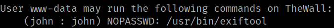
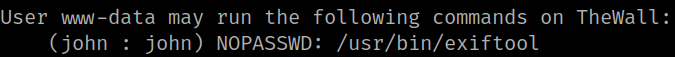

5.1 See sudoers
1. As “www-data” user run the following command.
www-data@TheWall:/var/www/html$ sudo -l
Output:

“john” user can run “/usr/bin/exiftool” as “root" with no password.
1. As “www-data” user run the following command.
www-data@TheWall:/var/www/html$ sudo -l
Output:

“john” user can run “/usr/bin/exiftool” as “root" with no password.